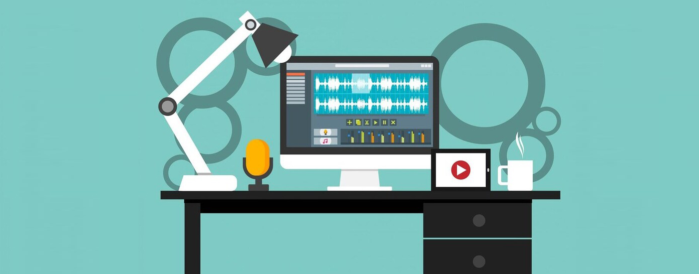

What i do
Web development

Web development is the term used to describe the development of websites, on the Internet or on an intranet.
The professional who works developing websites can be a web designer (layout developer) or a web developer (systems developer).
The term web development refers to the process of building and testing software specific to the web, for the purpose of obtaining a set of programs, which satisfy the desired functions, either in terms of user usability or compatibility with other existing programs.
Web development can range from simple static pages to rich applications, e-commerce or social networks.
The professional who works developing websites can be a web designer (layout developer) or a web developer (systems developer).
The term web development refers to the process of building and testing software specific to the web, for the purpose of obtaining a set of programs, which satisfy the desired functions, either in terms of user usability or compatibility with other existing programs.
Web development can range from simple static pages to rich applications, e-commerce or social networks.
Mobile Development

Mobile development or development of applications and systems for mobile devices, is all activity and processes related to the development of software for mobile devices such as PDAs, smartphones and tablets.
Image Editing

Image editing encompasses various processes such as retouching colors, removing unwanted elements, adjusting image geometry, such as rotating or cropping them, among others.
These processes are usually carried out through graphic software developed for this purpose, which through vector graphics editors, raster graphics editors and 3D modelers, allow users to manipulate, improve and transform images.
Many image editing programs are also used to render or create digital art from scratch.
Many image editing programs are also used to render or create digital art from scratch.
Video Editing

Video editing consists in manipulating the frames of a video and is used to rearrange and retouch the information present in them, in order to elaborate movies, television shows, ads and videos in general, in the desired way.
The process of editing a video can be difficult and tedious, so several technologies have been produced to help people in this task, such as pen-based video editing software, designed to provide people with a more intuitive and faster way to edit video.
The process of editing a video can be difficult and tedious, so several technologies have been produced to help people in this task, such as pen-based video editing software, designed to provide people with a more intuitive and faster way to edit video.
3D Animation

3D animation refers to the process of taking digital objects and making them come to life, creating the illusion that they are moving through a three-dimensional space.
These computer-generated objects appear on a two-dimensional screen, but are designed to mimic the principles of a 3D world, simulating movement as if they were a real-world object.
These computer-generated objects appear on a two-dimensional screen, but are designed to mimic the principles of a 3D world, simulating movement as if they were a real-world object.
Game development

Game development is the art of creating games and encompasses the design, development, testing and launch of them.
When creating a game, it's important to think about an engaging story, game mechanics, rewards, player engagement, and level design.
When creating a game, it's important to think about an engaging story, game mechanics, rewards, player engagement, and level design.